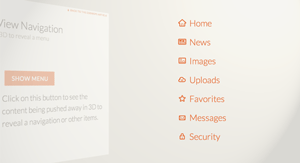

Matthew Greenberg
Recent Stories
Reading List
My Stories
Categories
Open Menu
Off-Canvas Menu Effects
Showing (off-canvas) menus stylishly
Based on the
Dribble shot by Michael Martinho
If you enjoyed this demo you might also like:
Transitions for Off-Canvas Navigations

Perspective Page View Navigation